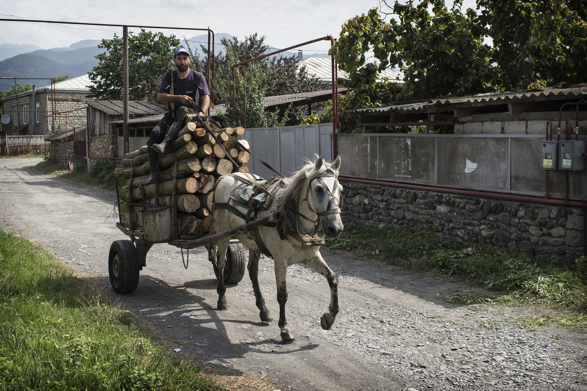

Park Narodowy Tusheti – położony na pograniczu gruzińsko – czeczeńsko – dagestańskim, 42 km od Chateau Napareuli.
Droga wiodąca do parku, to jedna z najpiękniejszych tras na świecie.
Powstała dopiero w latach 80’ ubiegłego wieku, przez przełęcz Abano (2850 m.n.p.m.) wiedzie do największej osady – Omalo.
Odwiedzane miejsca: Szenako, Dirtlo, Dartlo, Boczorna.
Park Narodowy Waszlowani – znajduje się w południowo – wschodnim krańcu Kakheti, 120 km od Chateau Napareuli.
Unikalny charakter parku, pozwala na niewielkim obszarze podziwiać przyrodę z kilku stref klimatycznych. Stepowy charakter tego miejsca kontrastuje z widokiem Wysokiego Kaukazu.
Odwiedzane miejsca: wąwóz orła, wulkany błotne, wąwóz rzeki Alazani, wąwóz niedźwiedzia.
Park Narodowy Kazbegi – ulokowany w północno – wschodniej Gruzji, 180 km od Chateau Napareuli.
Na terenie parku, znajduje się trzeci do do wielkości gruziński szczyt – Kazbeg (5047 m.n.p.m.).
Odwiedzane miejsca: twierdza w Sno, wysokogórska wioska Juta, masyw Chaukhi, dolina Truso, wąwóz Darialski, wodospad Gveleti, kościół Świętej Trójcy.
Park Narodowy Lagodekhi – ulokowany we wschodniej części Kakheti, 77 km od Chateau Napareuli.
To pierwszy park narodowy w Gruzji, założony w XIX wieku przez polskiego botanika Ludwika Młokosiewicza.
Pełen unikalnych okazów fauny i flory, 121 gatunków roślin występuje tylko na Kaukazie, z czego 9 tylko w Gruzji.
Odwiedzane miejsca: wodospad Lagodekhi, wodospad Gurgeriana, Jezioro Czarnych Skał.
Wąwóz Pankisi – 44 km od Chateau Napareuli, miejsce zamieszkałe przez gruzińskich Czeczenów - Kistów.
Odwiedzane miejsca: rezerwaty przyrody Batsara, Babaneuri, Ilto.
Wodospad Lopota – 15 km od Chateau Napareuli.
Wyczieczki po Kakheti
1. Alaverdi – Ikalto – Telavi.
2. Gremi – Nekresi – Kvareli.
3. Tsinandali – Telavi – Szuamta.

Rezerwacja:
+995 557 488 652 | reservation@chateaunapareuli.pl